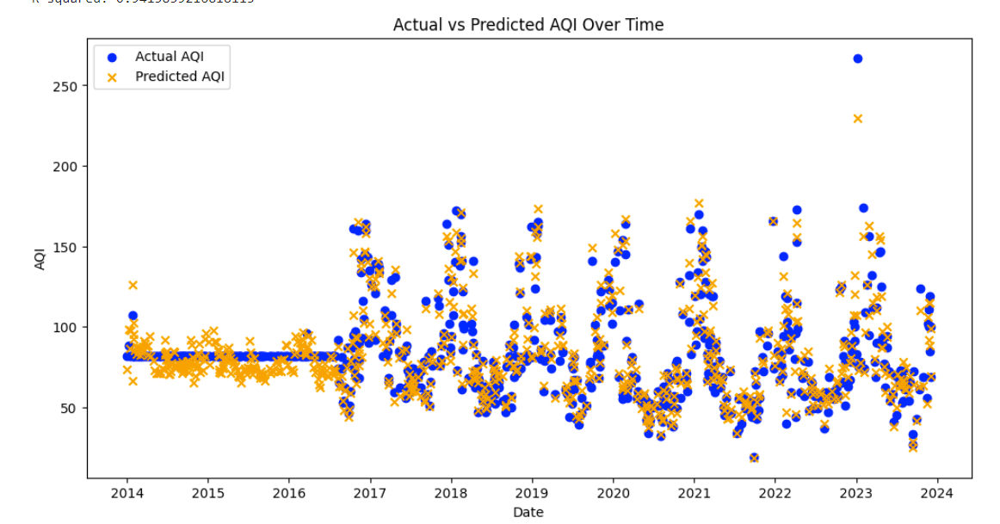

Welcome to my personal webpage! Here you can learn more about me, my work, and how to get in touch.
I'm Pasuwat Thangkongnuch, a second-year student in the Data Engineering faculty, passionate about turning data into actionable insights. With a solid foundation in coding and a growing expertise in data pipelines, my dedication is to master the tools and technologies that drive today's data-driven world. Whether working on projects or exploring the latest trends in big data, I'm always eager to learn and contribute to innovative solutions.
Here are some of the projects I've worked on:
If you would like to get in touch, feel free to reach out through the following channels:
Here is a photo from one of my recent projects API:
